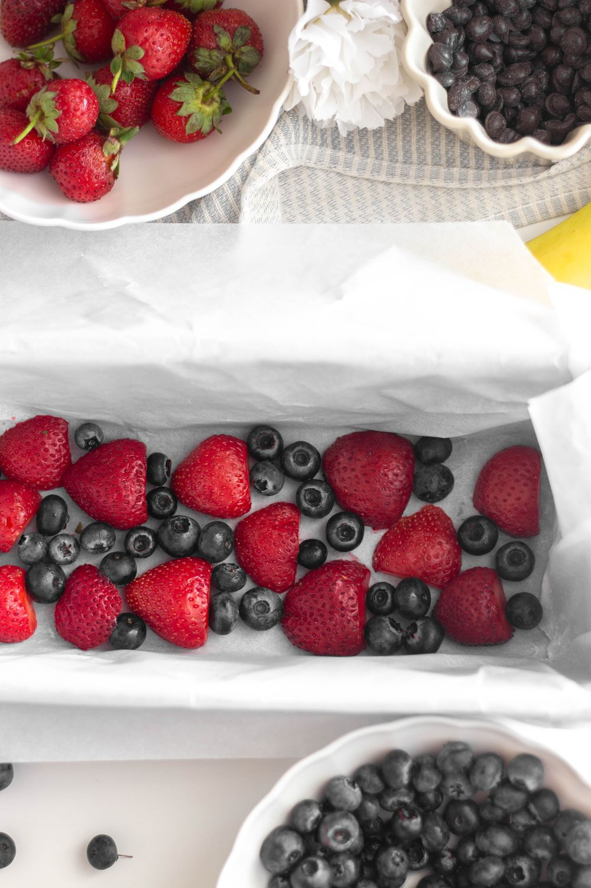
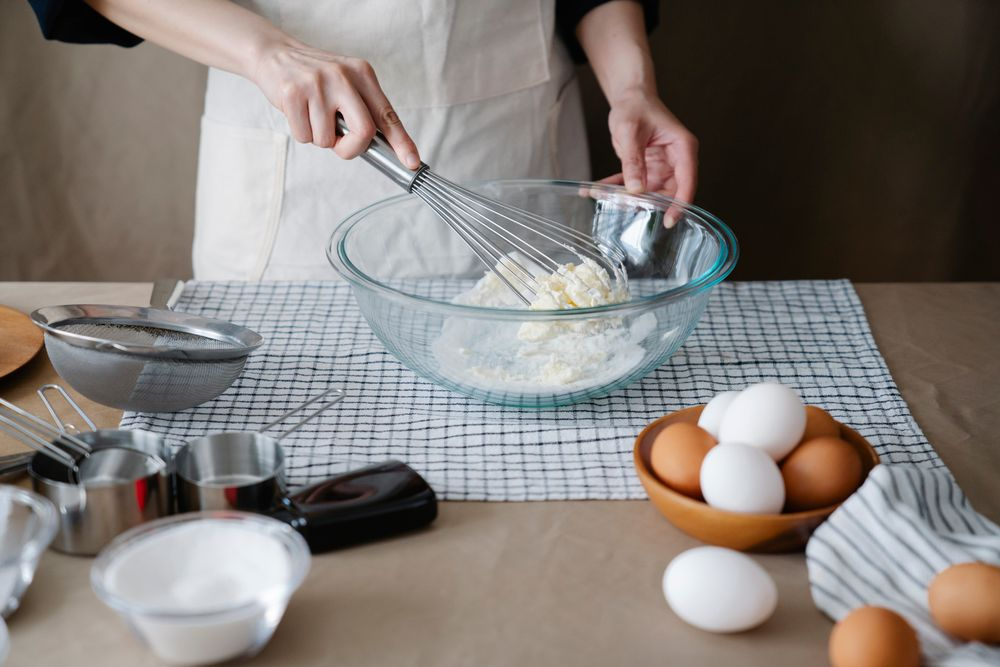

ロールケーキ
しっとりとしたスポンジに、やさしい甘さのクリーム。選ぶ楽しさも魅力です。
【要確認：商品名・価格】【要確認：ロールケーキの種類数・定番の名前】
NAGANO · KAWANAKAJIMA
長野市川中島の、まちのケーキ屋さん
ロールケーキを囲む、いつものおやつ。
大切な日を彩る、お祝いのケーキ。
ぷちろーるで、甘いひとときを。
味わいの表現は、Googleマップの口コミの傾向をもとに構成しています
10:00〜19:00 ／ 火曜定休


ABOUT PETIT ROLL
長野市川中島にある「お菓子の家ぷちろーる」。しっとりしたスポンジと、甘さ控えめのクリームが口コミで親しまれている洋菓子店です。
いろいろなロールケーキ、フルーツを楽しむケーキ、誕生日のホールケーキ。日々のおやつにも、家族のお祝いにも選ばれています。
Googleマップの口コミの傾向をもとに構成しています
【要確認：創業年】
【要確認：作りたてへのこだわり・掲載表現】
OUR SWEETS
いつもの日も、ちょっと特別な日も。
しっとりとしたスポンジに、やさしい甘さのクリーム。選ぶ楽しさも魅力です。
いちごショートなど、みずみずしいフルーツを楽しむケーキにも親しみの声が。
誕生日や記念日の食卓に。家族のお祝いのケーキとしても選ばれています。
商品カテゴリーと紹介文は、Googleマップの口コミの傾向をもとに構成しています
お菓子の最新情報は、Instagramへ。【要確認：日ごとの品揃え・販売状況】
Instagramを見る ↗FOR YOUR SPECIAL DAY
大切な人の、うれしい日に。
お祝いのケーキについては、お電話でお問い合わせください。
以下はご相談内容の目安です。注文の流れは
【要確認：予約方法・受け取り方法】
ご希望の日の対応についてご確認ください。
日付・人数・サイズ・メッセージなど。
日時や場所、お支払いについてご確認ください。
サイズ・価格・ご予約
【要確認：サイズと価格・何日前までに予約か】
【要確認：お取り置き対応の可否・条件】
米粉スポンジ・アレルギーについて
【要確認：米粉スポンジの対応可否・条件・要予約か】
【要確認：アレルギー対応・製造環境】米粉スポンジへの対応例が口コミにありますが、常時対応やアレルギー対応を保証するものではありません。
Googleマップの口コミの傾向をもとに構成しています
VISIT US
営業時間・アクセス
〒381-2226
長野県長野市川中島町1526-1
国道から一本入った場所にあるお店です。
Googleマップの口コミの傾向をもとに構成しています
CONTACT
ケーキのご予約についてのご質問や、営業日の確認はお電話で。
☎ 026-284-0483営業時間 10:00〜19:00 ／ 火曜定休
Instagramを見る ↗